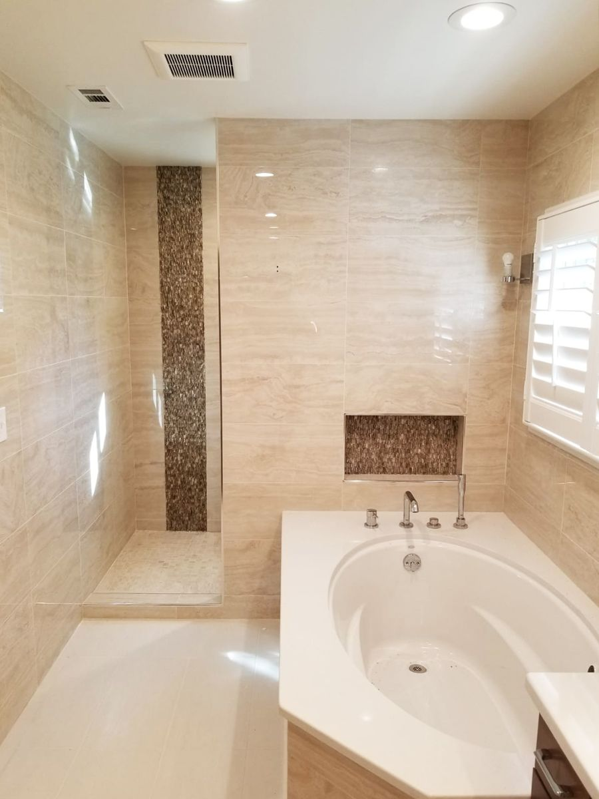

- Inicio
- Zonas
- Condado de North Fulton
- Ampliaciones de casa en Milton
Ampliaciones de casa en Milton, GA
Suites principales, recámaras y segundos pisos para propietarios en Milton y en todo el condado de North Fulton.
Sí. Building Ideas construye ampliaciones de casa en Milton, como suites principales, recámaras adicionales y segundos pisos. Primero revisamos la factibilidad y el presupuesto. Llame o envíe texto al 404-771-9004 para agendar una visita de planeación.
Ampliaciones que construimos en Milton
Milton es conocida por sus lotes grandes y su ambiente abierto y rural. Eso deja espacio para ampliar o construir, y más cosas que planear.
Una ampliación le permite quedarse donde está y aun así tener el espacio que necesita. Debe combinar con la casa, así que planeamos el techo, la distribución y los acabados antes de construir.
- Suites principales y recámaras adicionales
- Ampliaciones de segundo piso
- Mudrooms y espacios funcionales
- Factibilidad y guía de permisos antes de comprometerse
[Detalle local de Milton: un proyecto reciente de ampliaciones de casa, calle o vecindario, en palabras de Jair]
Proyecto local [Foto y dos líneas sobre un proyecto de ampliaciones de casa en Milton o cerca]
Trabajos recientes
Ver todos los proyectos →Más servicios en Milton
Preguntas sobre ampliaciones de casa en Milton
Ver todas las preguntas →¿Construyen ampliaciones de casa en Milton?
Sí. Building Ideas construye ampliaciones de casa en Milton, como suites principales, recámaras adicionales y segundos pisos. Primero revisamos la factibilidad y el presupuesto. Llame o envíe texto al 404-771-9004 para agendar una visita de planeación.
¿Necesito un permiso para una ampliación en Milton?
En la mayoría de los casos, sí. La guía de permisos es parte de nuestra etapa de preconstrucción, así que usted sabe lo que necesita su ampliación antes de empezar.
¿Planea un proyecto en Milton?
Cuéntenos qué está planeando. Agendaremos una visita de planeación y lo revisaremos junto con usted.